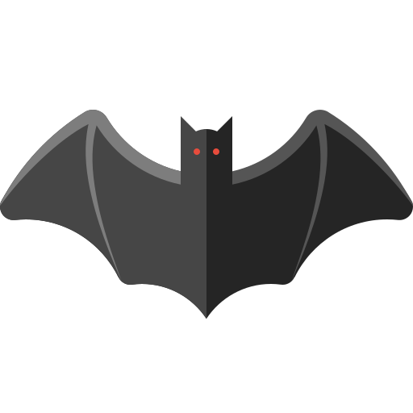

Welcome to MY
Frontend Projects
P.S: I've used only CSS and vanilla
JavaScript
PROJECT 1 Blurr
PROJECT 2 Scroll
PROJECT 3 Gemini
PROJECT 4 login
PROJECT 5 Songs
PROJECT 6 JokeAPI
PROJECT 7 App Key
PROJECT 8 FAQ
PROJECT 9 Choices
PROJECT 10 animNavBar
PROJECT 11 Increment
PROJECT 12 drinkWater
PROJECT 13 MovieApp
PROJECT 14 BackgroundCards
PROJECT 15 Time Clock
PROJECT 16 Button Animated
PROJECT 17 Drag&Drop
PROJECT 18 Draw
PROJECT 19-22 Combo
PROJECT 22 Rotation Cat
PROJECT 23 Quiz
PROJECT 24 TriLoading
PROJECT 25 PreLoading Wave
PROJECT 26 Personal WebSite
PROJECT 27 Vertical Slider V
PROJECT 28 Notification!!!
PROJECT 29 GitHub API
PROJECT 30 Like
PROJECT 31 AutoWrite
PROJECT 32 PassGenerator
PROJECT 33 Switch
PROJECT 34 Notes
PROJECT 35 CountDown Get Ready
PROJECT 36 Cards Grid
PROJECT 37 Circle Slider
PROJECT 38 HoverBoars
PROJECT 39 MobTabNav
PROJECT 40 passwd Tailwind
PROJECT 41 BatMan 
PROJECT 42 Verification
PROJECT 43 Search Anyone
PROJECT 44 Feedback
PROJECT 45 Range Widget
PROJECT 46 Netflix